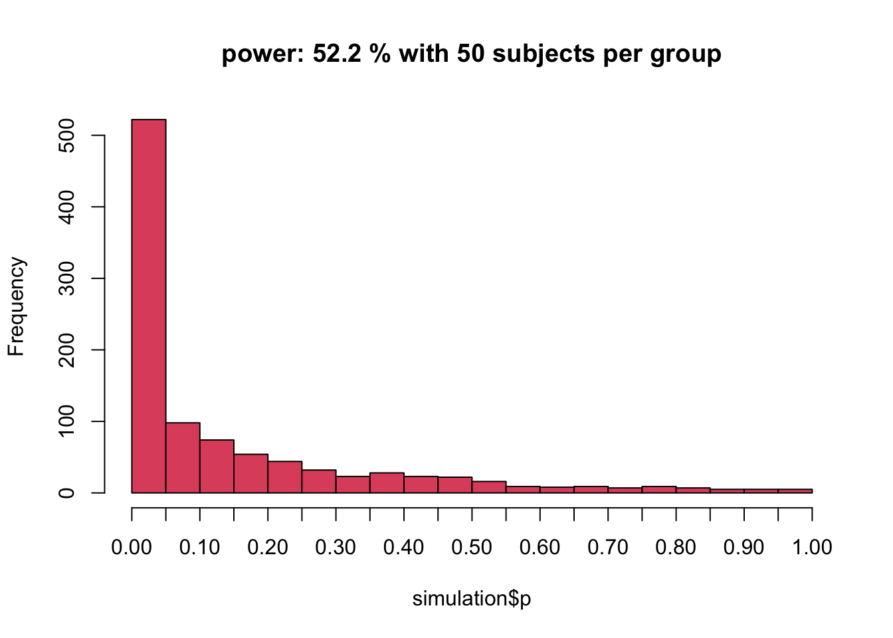

This material is distributed under a Creative Commons licence. CC-BY-SA 4.0.
Much of this material has been adapted from the following Creative Commons materials: DeBruine, L. (2019). Tutorials. https://debruine.github.io/tutorials/
Crump, Matthew J. C. (2017). Programming for Psychologists: Data Creation and Analysis (Version 1.1). https://crumplab.github.io/programmingforpsych/
Bishop, D. V. M., Chambers, C., & Munafo, M. R. (2019, January 10). Bishop. Retrieved from osf.io/skz3j
You will learn about functions and iteration by using simulation to calculate a power analysis for ANOVA on a simple two-group design.
The topics below are not covered in these materials, but can be followed up in links.
simulate more complicated designs https://github.com/Lakens/ANOVA_power_simulation
determine power for linear mixed models with random intercepts, and random slopes https://psyarxiv.com/xp5cy
Start with a simple between subjects design, where the independent (grouping) variable has two levels, and the dependent variable is from a normal distribution. To simulate this dataset, we need to know
You start simulation scripts by setting parameters for these values.
#simulate normally distributed data for an independent samples t-test
muA <- 50 #what's the population mean for condition A?
muB <- 55 #what's the population mean for condition B?
n1 <- 100 #how many participants group A?
n2 <- 100 #how many participants group B?
sigma1 <- 20 #population standard deviation of condition A?
sigma2 <- 20 #population standard deviation of condition B?You can the generate the scores using the rnorm() function.
A_scores <- rnorm(n1,muA,sigma1) #simulate a vector of 100 deviates from normal distribution
B_scores <- rnorm(n2,muB,sigma2) #simulate a vector of 100 deviates from normal distribution
hist(A_scores)hist(B_scores)You’ve now generated two vectors (container lists) of scores. You can stop here and just analyse your simulated data with t.test(A, B), which is the equivalent to having the data in wide format in SPSS.
t.test(A_scores,B_scores)##
## Welch Two Sample t-test
##
## data: A_scores and B_scores
## t = -2.5124, df = 197.66, p-value = 0.01279
## alternative hypothesis: true difference in means is not equal to 0
## 95 percent confidence interval:
## -13.215234 -1.592526
## sample estimates:
## mean of x mean of y
## 47.64339 55.04727Look at the output, and re-run the data simulation, and t-test chunks. What happens?
It is usually more useful to put your simulated data into a data table that looks like what you might eventually import from a CSV file with your actual experimental data. You can export this simulated dataset as a CSV and upload to your demo OSF project.
If you use the tidyverse, you’ll create a data table using the tibble() function (but you can use data.frame() if you must). We need to know what condition each subject is in, so set the first n1 values to “A” and the next n2 values to “B”. Then set the score to the A_scores concatenated to the B_scores. THe tibble is assigned to dat.
dat <- tibble(
sub_condition = rep( c("A", "B"), c(n1, n2) ),
score = c(A_scores, B_scores)
)You can export the tibble to a csv file:
write.csv(dat, file ="independent_samples.csv",row.names = FALSE ) Now let’s try a paired-samples design where the variables are from a normal distribution. Each subject produces two scores (in conditions A and B, which could either be, e.g. a pretest and postest, or scores from two levels of one measure, e.g. grammatical and ungrammatical sentences). What we need to know about these two scores is:
sub_n <- 100
A_mean <- 10
B_mean <- 11
A_sd <- 2.5
B_sd <- 2.5
AB_r <- 0.5Again, you can analyse your simulated data.
t.test(dat$A, dat$B, paired = TRUE)##
## Paired t-test
##
## data: dat$A and dat$B
## t = -2.6125, df = 99, p-value = 0.01039
## alternative hypothesis: true difference in means is not equal to 0
## 95 percent confidence interval:
## -1.0148337 -0.1387088
## sample estimates:
## mean of the differences
## -0.5767713You can export the tibble to a csv file:
write.csv(dat, file ="paired_samples.csv",row.names = FALSE ) In order to simulate more complex designs, you will want to use some of the useful built-in R functions. A good overview can be found here.
rbinom() for binomial data, rpois() for count data, and runif() for uniform data (like the null hypothesis).rep().seq()rep()The function rep() lefts you repeat the first argument a number of times.
Use rep() to create a vector of alternating "A" and "B" values of length 24.
rep(c("A", "B"), 12)## [1] "A" "B" "A" "B" "A" "B" "A" "B" "A" "B" "A" "B" "A" "B" "A" "B" "A" "B" "A" "B" "A" "B" "A" "B"Use rep() to create a vector of 12 "A" values followed by 12 "B" values
rep(c("A", "B"), each = 12)## [1] "A" "A" "A" "A" "A" "A" "A" "A" "A" "A" "A" "A" "B" "B" "B" "B" "B" "B" "B" "B" "B" "B" "B" "B"Use rep() to create a vector of 11 "A" values followed by 3 "B" values
rep(c("A", "B"), c(11, 3))## [1] "A" "A" "A" "A" "A" "A" "A" "A" "A" "A" "A" "B" "B" "B"seq()The function seq() is useful for generating a sequence of numbers with some pattern.
Use seq() to create a vector of the numbers 0 to 100 by 10s.
seq(0, 100, by = 10)## [1] 0 10 20 30 40 50 60 70 80 90 100Here is some code to simulate a tibble with 2 x 2 within subjects design. It assumes 20 subjects participating in all conditions. IV1 has two levels. IV2 has two levels.
Subject_ID<-factor(rep(seq(1,20),each=4))
DV<-rnorm(80,c(100,200,300,400),sd=10)
IV1<-rep(c("level1","level2"),each=2,20)
IV2<-rep(c("level1","level2"),each=1,40)
AllData<-dplyr::tibble(Subject_ID,DV,IV1,IV2)Data simulation is useful for calculating power when planning a study. The logic of the approach is as follows:
You can do this by putting the contents of your data simulation code within a function, that you then replicate many times. Put all your parameters as arguments to the function.
The general structure of a function is as follows:
function_name <- function(my_args) {
# process the arguments
# return some value
}Here is a custom function for the independent samples t-test, that outputs selected values. It takes the arguments that we created earlier when simulating independent samples.
ind_sim <- function(A_sub_n, B_sub_n, A_mean, B_mean, A_sd, B_sd) {
A_scores <- rnorm(A_sub_n, A_mean, A_sd)
B_scores <- rnorm(B_sub_n, B_mean, B_sd)
dat <- tibble(
sub_condition = rep( c("A", "B"), c(A_sub_n, B_sub_n) ),
score = c(A_scores, B_scores)
)
t <- t.test(score~sub_condition, dat)
#return just the values you care about
list(
t = t$statistic,
ci_lower = t$conf.int[1],
ci_upper = t$conf.int[2],
p = t$p.value,
estimate = t$estimate[1] - t$estimate[2]
)
}Now run your new function with the values you used above. Note that you can enter these directly into the functions arguments, but here they are coded outside the function so they can be referenced in a histogram.
#You could call it like this: ind_sim(50, 50, 10, 11, 2.5, 2.5), but the later makes it easier to change
A_sub_n <- 50
B_sub_n <- 50
A_mean <- 10
B_mean <- 11
A_sd <- 2.5
B_sd <- 2.5
ind_sim(A_sub_n, B_sub_n, A_mean, B_mean, A_sd, B_sd)## $t
## t
## -0.8502184
##
## $ci_lower
## [1] -1.687971
##
## $ci_upper
## [1] 0.6755047
##
## $p
## [1] 0.3972979
##
## $estimate
## mean in group A
## -0.5062331Now you can use this function to run many simulations. There are a lot of ways to do this. The pattern below uses the map_df function from the purrr package, and stores the results in a variable called ‘simulation’. This runs 1000 simulations, which is fine for a demonstration, but you would be better with 100,000.
simulation <- purrr::map_df(1:1000, ~ind_sim(A_sub_n, B_sub_n, A_mean, B_mean, A_sd, B_sd))You then calculate the proportion of tests that reject the null. The p-values from each run can also be represented in a histogram. What happens to p-values when there is no effect (e.g. you set A_mean equal to B_mean)?
###### p-values < .05 ? ######
sig.x1 = ifelse(simulation$p <= .05, 1, 0)
hist(simulation$p, 20, xaxp=c(0, 1, 20), col=2, main = paste('power:', mean(sig.x1 * 100), '% with', A_sub_n, 'subjects per group'))
You can save your work as a new R script (ending in .R), or Rmarkdown file (ending in .Rmd). These can then be uploaded to supplement a preregistration. See example (here)[https://osf.io/kfxtp/].